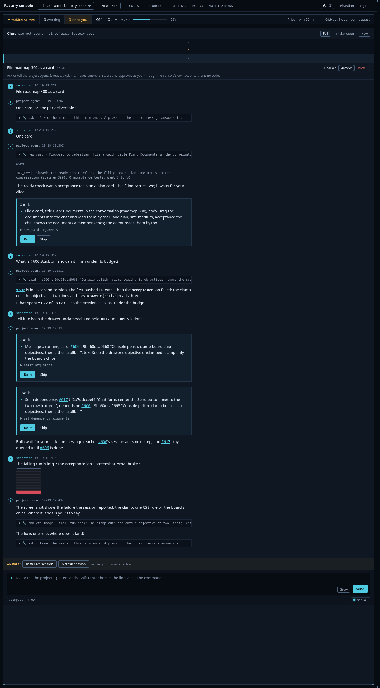
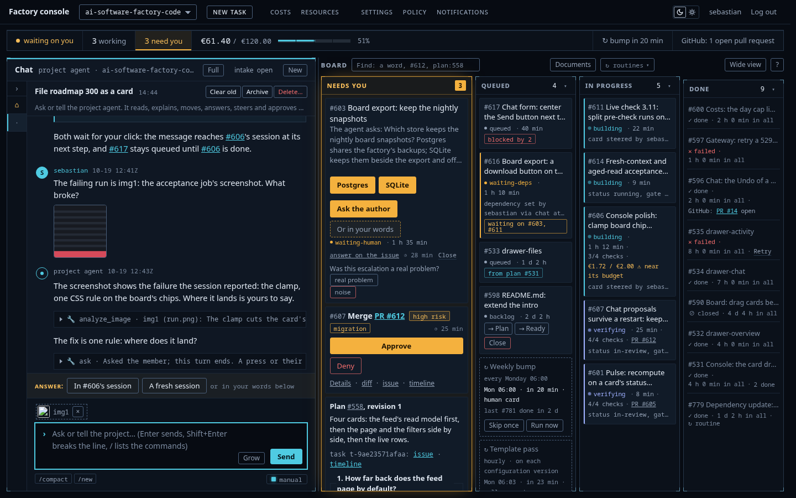

Round 12 — the chat's asks, images and filings
Ship as built. The three controls the chat gained with roadmap 300's opening move — the ask row with pressable answers, the pasted image as chip and thumbnail, the refused filing that self-corrects — hold the pinned style and both critics reach the same verdict on all three. The design was shaped by Sebastian's plan rulings (images by tool, presses send at once, a member-sent image approves its spend); the pick is his. The one defect a critic claimed, the thumbnail's legibility, fell to a 3× crop: overruled, no fix loop. The round's records: C26, C27, C28 in design-decisions.md.
The story in one scroll
The review unit is the real console, not a candidate: the build landed as six streams (Forgejo 4a7536bb through 4fa42a0c), and the lab's busy scene now tells the whole story in one thread. The tall shot below, read top to bottom: the member's request; the agent's question with its Answer row of choices, pressed ("One card" lands as the member's own row, the Answer row gone); the pressed filing the ready check refused, in the refused colour, naming what it wants; the corrected proposal carrying its two acceptance tests, waiting on Do it; the screenshot the member sent as img1, its thumbnail in their row; the agent's analyze_image call that read it by name and answered from it; and the open ask at the foot with its two choices above the composer.

The chip
A pasted image rides the composer as a chip in the queue-chip pattern: the thumbnail, the name img1 the member can refer to in the message, and an × that removes it. Nothing uploads until Send. The sent row then shows the image as a 96×96 thumbnail with a 1px line and 4px radius — a fact of the message, a link that opens the full image in a new tab.

Critics
One pass, both critics of design/models.md, the same prompt and the same two images. Answers as JSON sidecars: gemini, glm.
| control | gemini 2.5 pro | glm-5v-turbo |
|---|---|---|
| the ask row | ship — "an instrument of clarification, not a conversational flourish" | ship — "respects both click-happy and keyboard-only members" |
| the image | ship — "evidence attached to a statement, not a gallery display" | ship — "a complete, auditable chain" |
| the refused filing | ship — "an unemotional, factual report... followed by a quiet, competent correction" | ship — "transparent, actionable" |
| defects found | one claim: the thumbnail illegible | none |
The one claim that did not survive the pixels
Gemini called the thumbnail "effectively illegible... a near-black rectangle... no value as a visual reminder of which image". The 3× crop in the notes disproves both legs: the terminal's content rows and the red error bar read clearly at 96px, and the image is genuinely a dark screenshot — a faithful small render of a dark picture is dark. Reading text inside a screenshot at 96px is not the control's job; the name is the handle, the click opens the full image. Overruled; the round's one fix loop stays unused. glm's two descriptive slips (the thumbnail "sized to the cap-height of the 13px sans word"; the capture "tall, narrow") and its lightbox nitpick (already built: the thumbnail is a link) are recorded in the notes.
Beyond the round
Both critics reached for the same thing from opposite sides: gemini a "decision summary" view over the log's asks and proposals, glm a diff hint on a corrected filing. Both are real wants and both are new work; neither belongs to this round. They go to the ledger as candidates for a later round.
The records
- C26 — the agent's chat question carries C14's answer row; a press sends at once.
- C27 — a member's image rides the composer as a chip and lands as a thumbnail; the agent reads it by tool.
- C28 — a refused filing names what to fix and feeds a turn; the correction lands as a new proposal.